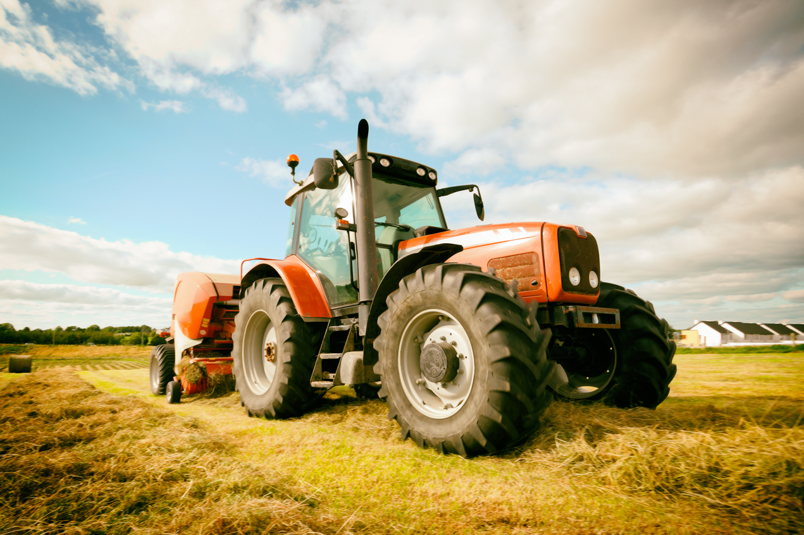

Tipi di
trattori
Siamo una piattaforma online dedicata agli appassionati di agricoltura, ai professionisti del settore
e a chiunque desideri scoprire tutto sui trattori. Offriamo una vasta gamma di trattori, ricambi,
attrezzi agricoli e accessori per ogni tipo di esigenza. Scopri le nostre soluzioni per migliorare
l'efficienza e la produttività del tuo lavoro nei campi.
Passione, innovazione e affidabilità:
la nostra storia
Farm Pro è nato con l'idea di offrire soluzioni innovative e
di qualità per il mondo dell'agricoltura. Fondata da esperti del
settore, la nostra azienda è cresciuta nel tempo, diventando un punto
di riferimento per tutti coloro che cercano trattori e attrezzature
agricole di alta qualità.

La nostra missione
Fornire ai nostri clienti i migliori trattori e attrezzature per ottimizzare
il lavoro agricolo, sempre con un'attenzione particolare alla sostenibilità e
all'efficienza. Lavoriamo a stretto contatto con i migliori produttori per offrirti
solo il meglio in termini di performance e durata.
Da sempre, la nostra missione è offrire il massimo in qualità, supporto e innovazione. Lavoriamo a stretto contatto con i marchi più prestigiosi per garantire prodotti che non solo sono duraturi, ma anche estremamente performanti. Ogni trattore e attrezzo che offriamo è pensato per affrontare le sfide più difficili con affidabilità e precisione.
Il nostro team di esperti è sempre a tua disposizione. Se hai domande o hai bisogno di assistenza, siamo pronti a fornirti risposte rapide e soluzioni efficaci per ogni tua esigenza.
Siamo fermamente impegnati nel promuovere tecnologie e pratiche agricole che rispettano l'ambiente. La sostenibilità è al centro delle nostre scelte, per garantire un futuro agricolo più verde e responsabile.
Non ci fermiamo mai. Investiamo costantemente nella ricerca per offrirti trattori e attrezzature all'avanguardia, pensati per migliorare la tua produttività e semplificare il tuo lavoro nei campi.